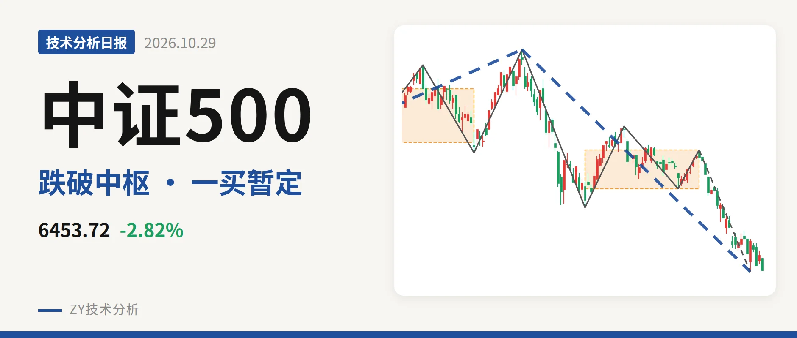
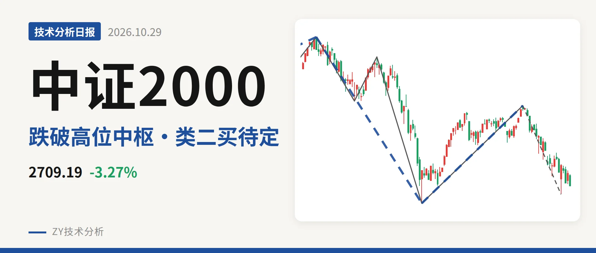
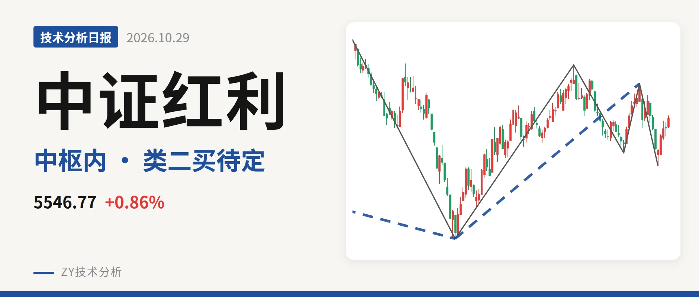
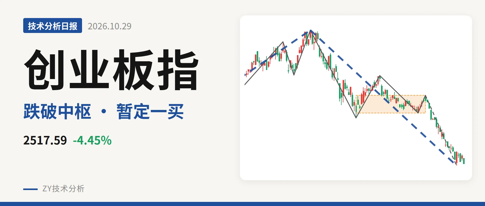

技术分析日报 · 2026-10-30

上证指数 3599.02 -1.44%
中枢下移失守3928，反抽三日未成笔

沪深300 4041.84 -1.03%
跌破4478中枢，一买未成笔

中证500 6453.72 -2.82%
跌破7451中枢，一买未定

中证2000 2709.19 -3.27%
反抽2853点乏力，2585点类二买待定

中证红利 5546.77 +0.86%
新低不新弱，5328点成类二买

创业板指 2517.59 -4.45%
跌破日线中枢，反抽仍看3227点
⚠️ 本文为基于公开行情数据的缠论技术结构记录，由程序自动计算并生成，仅供学习交流，不构成任何投资建议。市场有风险，投资需谨慎。